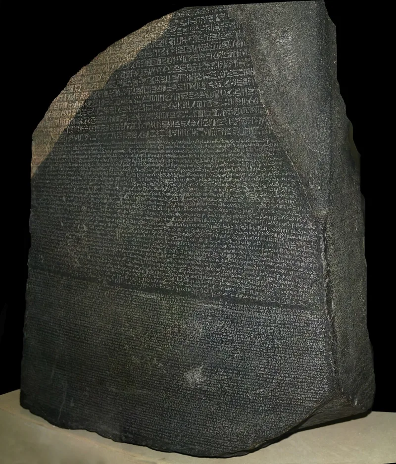
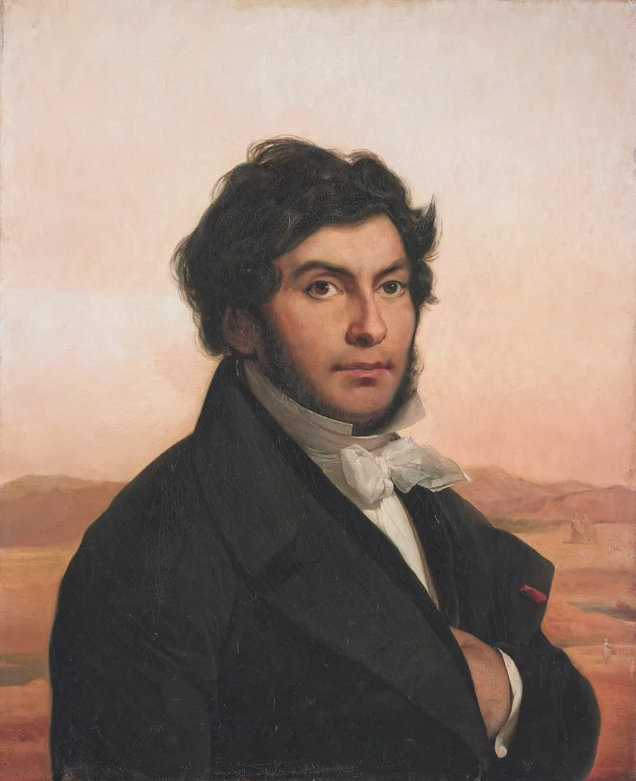
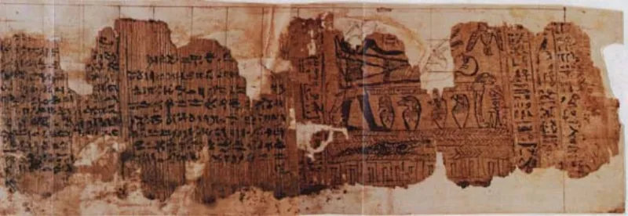

LDS scholars have a real answer here. Say so before your friend does.
The working papers. Alongside the Book of Abraham, Joseph Smith's circle produced the Kirtland Egyptian Papers.
Among them is a bound volume, Grammar and Alphabet of the Egyptian Language, from 1835. It is in the hands of W.
W. Phelps and Warren Parrish.
The Joseph Smith Papers have published it in full.
That he was "studying the Egyptian language." And that the group was "engaged in translating an alphabet to the Book of Abraham, and arranging a grammar of the Egyptian language."
It gives a single Egyptian character a paragraph of English meaning. Those meanings then multiply through five degrees.
Egyptologists reject it entirely. It bears no relation to Egyptian.
And three Book of Abraham manuscripts have characters copied in order from the Hor papyrus down the margin, beside the English.
Gee, Muhlestein and Pearl of Great Price Central argue the dependence runs the other way. The scribes were trying to work backwards from an English text already revealed.
It was an exercise Joseph allowed but did not write. Most pages are in scribes' handwriting.
The grammar was never published or canonised. And they argue the Abraham text came first, on textual grounds.
Genuinely arguable on the narrow question. Which came first is really debated, and the Joseph Smith Papers editors call the documents intertwined.
But the escape is expensive. His own journal says he was arranging the grammar.
Either way, his circle produced an Egyptian system, under his eye, that is nonsense. Use it to support the papyri case, not on its own.
"Have you seen the Egyptian alphabet they made in Kirtland? It's published."



The scribes worked backwards from an English text already given, and never published it.
Gee, Muhlestein and Pearl of Great Price Central argue that the borrowing runs the other way.
On their view the scribes were working backwards. They had an English text already given, and tried to build Egyptian out of it. It was a study exercise Joseph allowed but did not write.
Most pages are in scribes' hands. The Grammar was never printed and never made canon. And they argue that the Abraham text came first, on the evidence of the manuscripts.
So the Kirtland Egyptian Papers show 1835 curiosity about Egyptian. They do not show how the Book of Abraham was made.
Arguable on which came first, but his own journal says he arranged that grammar.
The narrow question is which came first: the English text, or the Alphabet documents. That is genuinely debated. Joseph Smith Papers editors call the documents intertwined, and scholars on both sides make textual arguments.
So the strongest critical framing, that the Grammar was the engine of translation, stays contested.
But the escape is expensive. Joseph's own journal says the group was 'arranging a grammar of the Egyptian language'. Either way, his circle produced an Egyptian system under his eye, and it is nonsense.
Set beside the papyri mismatch, this backs up the case rather than carrying it alone.